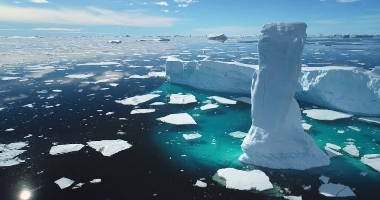

6.1 Climate Change: A Global Challenge
What is Climate Change?
Climate is the average weather pattern of a specific region over a long period, typically 30 years.
Climate Change refers to a significant and lasting change in these statistical weather patterns over decades or longer.
While Earth's climate has changed naturally throughout history, current warming is unprecedented in speed due to human activity.
